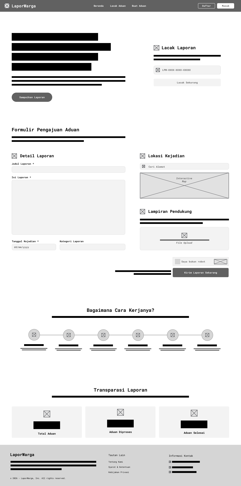
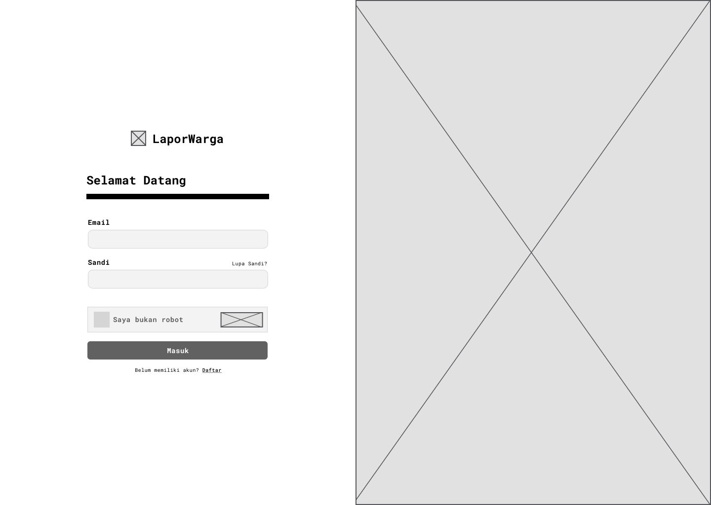
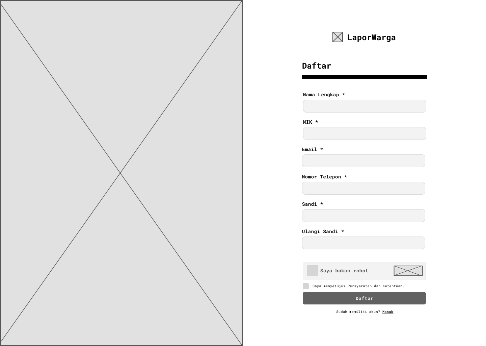
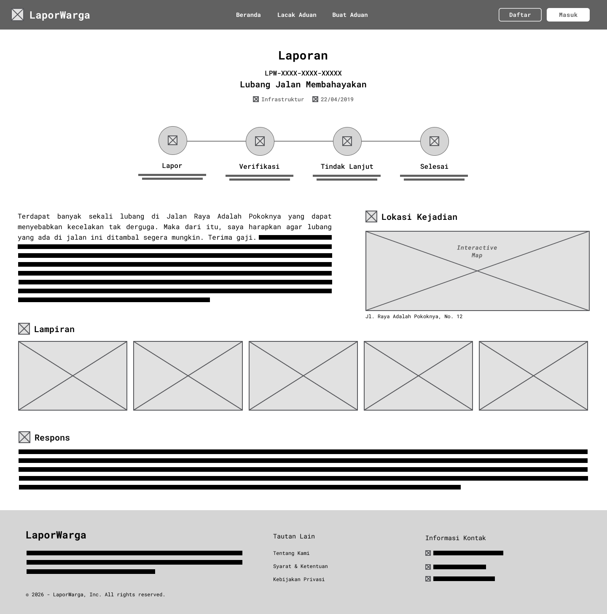
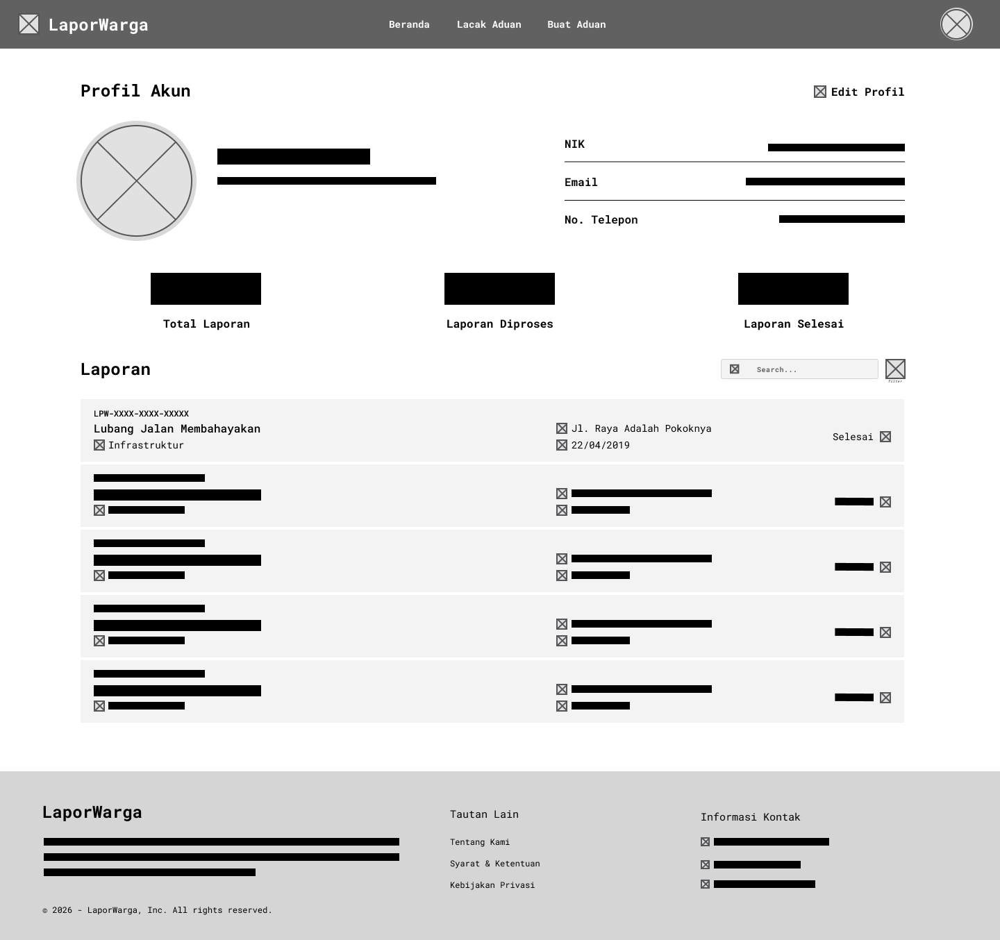
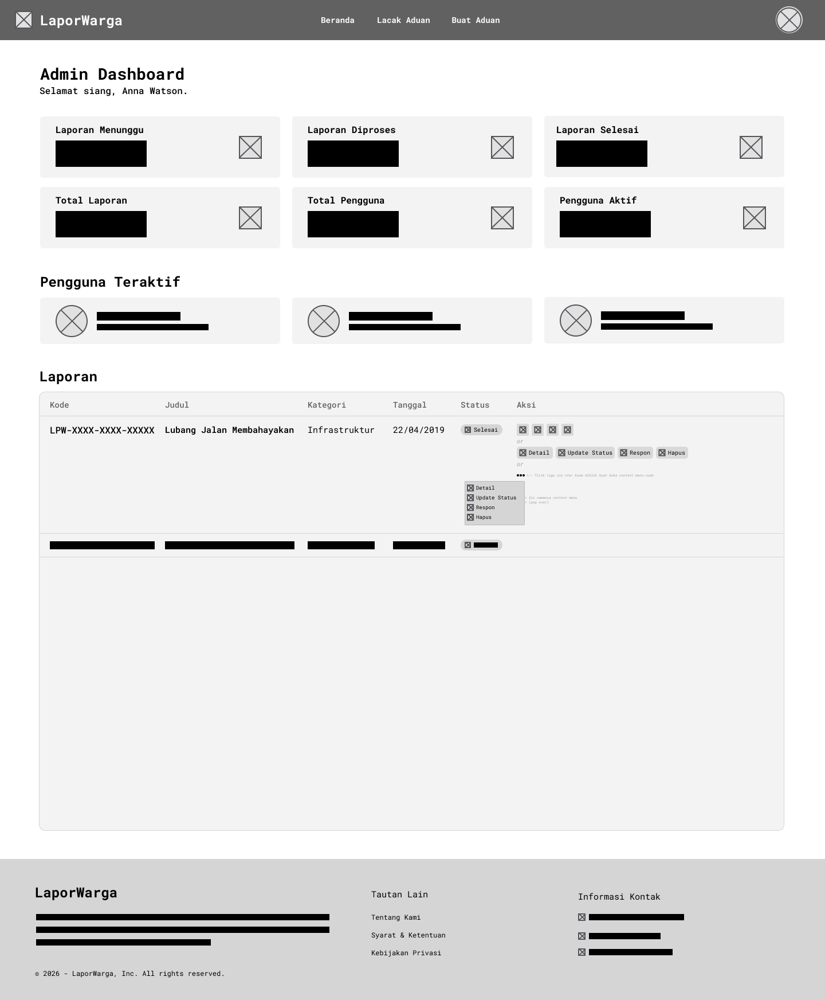
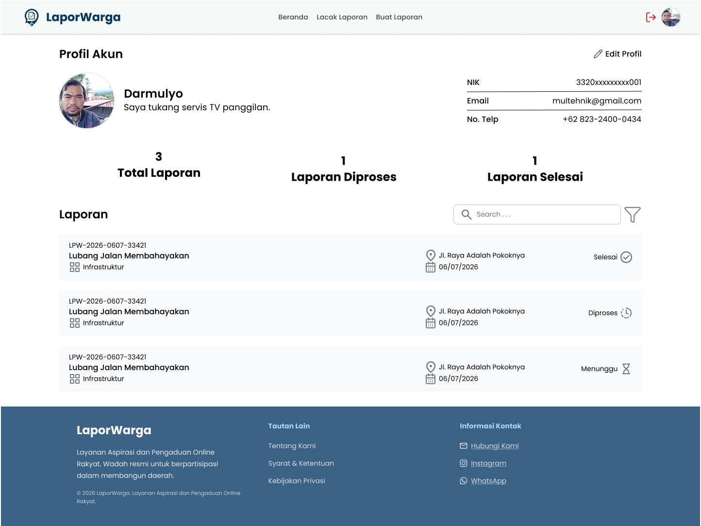

LaporWarga
LaporWarga
Membangun pengalaman pelaporan masyarakat yang lebih cepat, transparan, dan terintegrasi.
Elektro Expo 2026
Lomba Desain UI/UX — SMA/SMK
Sons of Figma
Leon Indiantono · Arya Dwiputra · Noval Akbar
Pembimbing — Maziya Distya, S.Pd. · SMK Negeri 1 Kandeman
Pembimbing — Maziya Distya, S.Pd. · SMK Negeri 1 Kandeman
laporwarga.id

LPW-2026-0607-33421
Lubang Jalan Membahayakan
Selesai
04 · User Persona
Siapa yang menggunakan LaporWarga?
Dua persona — warga sebagai pelapor, admin sebagai pengelola. Dokumen persona lengkap dari riset kami:
 Persona Warga — Darmulyo
Persona Warga — Darmulyo
 Persona Admin — Leon Indiantono
Persona Admin — Leon Indiantono
05 · Arsitektur Informasi
Menyederhanakan struktur pengalaman pengguna
Diagram IA asli — semua fungsi kunci terjangkau dari Beranda.
 Sumber: Figma — LaporWarga
Sumber: Figma — LaporWarga
06 · Wireframe Lo-Fi
Kami mulai dari struktur, bukan warna
Wireframe asli 7 halaman utama — memvalidasi alur sebelum visual dibuat.
Home

Login

Register

Laporan

Profile

Admin

User Setting

07 · Prototipe Hi-Fi
Dari wireframe menjadi pengalaman nyata
Tampilan asli LaporWarga — antarmuka yang sama dengan yang akan dicoba juri saat demo.
laporwarga.id
Beranda
laporwarga.id/buat-laporan
Buat Laporan
laporwarga.id/laporan
 Detail Laporan
Detail Laporan
laporwarga.id/profil

Laporan Saya & Status
laporwarga.id/admin
 Dashboard Admin
Dashboard Admin
11 · Demo
Mari lihat langsung aksinya
Dari laporan pertama hingga status selesai.
laporwarga.id
Perjalanan laporan
Terkirim
Verifikasi
Proses
Selesai